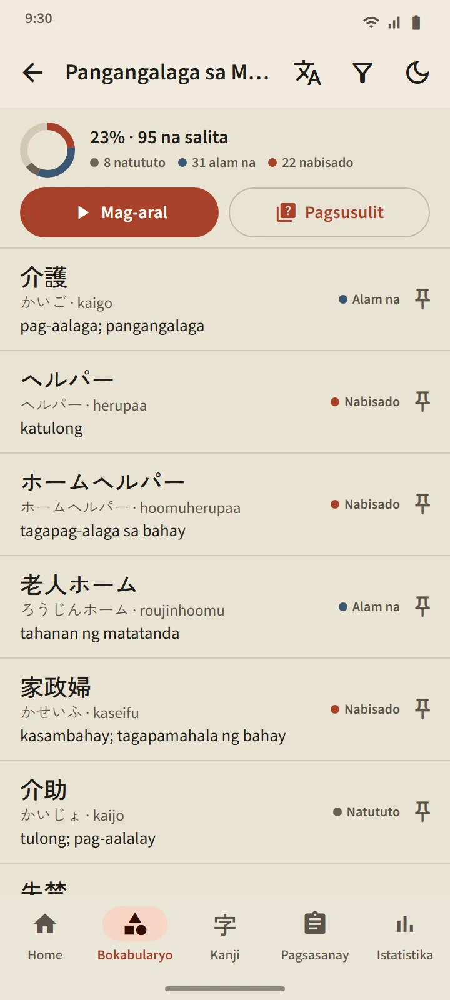

Bokabularyo
Bokabularyong talagang tumatatak
Naka-iskedyul gamit ang FSRS, isang makabagong spaced repetition algorithm, ang bawat card. Ikaw ang magre-rate sa sarili mo, at kakalkulahin ng app kung kailan babalik ang salita: nakasulat sa bawat button ang susunod na pagitan. Umaakyat ang mga salita mula Bago, Natututo, at Alam na hanggang Nabisado, at sa pamamagitan lang ng pagsusulit maaabot ang huling yugtong iyon.
- 95 paksa sa 11 grupo. May 21 paksa ang grupong Trabaho, mula sa mga utos ng superbisor, kaligtasan sa trabaho, iskedyul at kontrata hanggang sa pabrika, konstruksiyon, agrikultura, restawran, hotel at pag-aalaga sa matatanda.
- Isang screen para sa bawat deck. Porsiyento ng pagkakumpleto, katayuan ng bawat salita, at mga button na Mag-aral at Pagsusulit.
- Pocket dictionary ng 38,085 salita. Maghanap gamit ang kanji, kana, romaji, o kahulugan.
